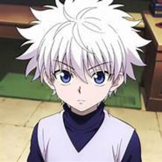
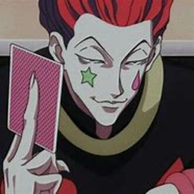
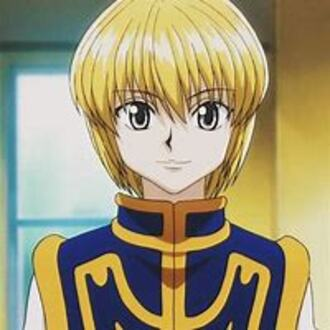
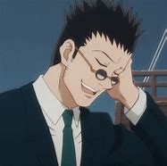
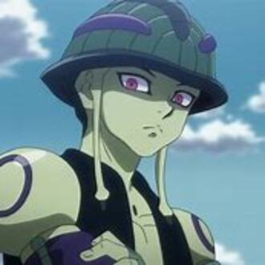

-
Gon
.jpg)
Descrição
Gon é conhecido por sua força física, habilidades de luta e determinação em encontrar seu pai. Seu sorriso cativante e personalidade corajosa o tornam um personagem memorável em Hunter x Hunter.
-
Killua
Descrição
Killua é um jovem prodígio que faz parte de uma família de assassinos profissionais, e é conhecido por sua habilidade em combate e sua personalidade fria e calculista.
-
Hisoka
Descrição
. Hisoka é um mestre do Nen, com a habilidade de Transmutação, que lhe permite manipular sua aura de forma única. Ele usa a técnica Bungee Gum para prender sua aura a objetos ou oponentes, dando-lhe controle sobre seus movimentos.
-
Kurapika
Descrição
Kurapika é o último sobrevivente do clã Kurta, cujos membros adquiriam olhos vermelhos quando estavam sob forte emoção. Após o massacre de seu clã pela Trupe Fantasma, Kurapika busca vingança e justiça, desejando recuperar os olhos escarlates arrancados dos corpos de seus entes queridos. Sua jornada o leva a se tornar um Hunter e a dominar o Nen, uma energia vital usada para manifestar habilidades paranormais.
-
Leorio
Descrição
Leorio é um jovem que deseja se tornar um médico para ajudar os pobres e quer ganhar dinheiro sendo um caçador para fazê-lo. Apesar de sua aparência madura, ele é um adolescente. Sua personalidade é apaixonada por suas ambições, mas também egocêntrica e cínica. Leorio desempenha um papel importante durante os eventos de Yorknew, ajudando Gon a ganhar dinheiro e capturando a infame Trupe Fantasma.
-
Meruem
Descrição
Meruem é a Formiga Quimera mais poderosa, e o personagem mais poderoso a ser apresentado na série até agora, bem como um dos mais inteligentes. Nascido como a última arma biológica, seu poder físico só é acompanhado por um intelecto sem paralelo.